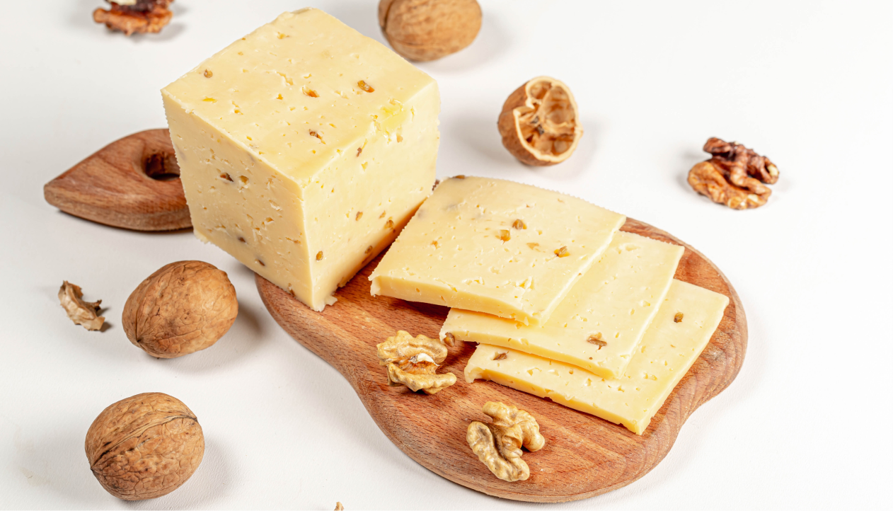

Правила хранения сыра

Основные правила:
Правило №1
Хранение в холодильнике
Правило №2
Пергаментная бумага
Правило №3
Правило соседства
Важно!
*Сыр лучше всего хранить в прохладном и сыром месте,
чтобы избежать появления плесени, сохранить его вкус
и текстуру.
Хранение сыра - важный аспект, который может повлиять на его
вкус и свежесть, поэтому правильное хранение сыра является
необходимым условием для сохранения его качества.
Сыр - это один из самых популярных продуктов в мире,
который используется в качестве добавки к блюдам или
в качестве отдельной закуски. Однако, чтобы сыр сохранял свою
свежесть и вкус, необходимо правильно хранить его. В этом
кратком руководстве мы расскажем о нескольких важных фактах,
которые помогут вам правильно хранить сыр.
Храните сыр в холодильнике
Холодильник - идеальное место для хранения сыра, так как он
предотвращает развитие бактерий и грибков, которые могут
испортить продукт. Но важно помнить, что температура
в разных частях холодильника разная, поэтому сыр нужно хранить
в самой нижней части, где температура самая низкая.
Оберните сыр в пергаментную бумагу
Пластиковая обертка может задушить сыр и привести
к развитию плесени. Пергаментная бумага, наоборот, позволяет
сыру "дышать" и сохранять свежесть. Если вы не нашли
пергаментную бумагу, можно использовать обычную бумагу
для выпечки.
Не храните разные виды сыров вместе
Некоторые виды сыров, например, с плесенью, могут передавать
свой аромат другим сырам, что может испортить их вкус.
Поэтому лучше хранить разные виды сыров отдельно.
Не забывайте про влажность
Для хранения сыра важна не только температура,
но и влажность Сыры, которые содержат много влаги, лучше
хранить в контейнерах или упаковках, чтобы сохранить
влажность. Твердые сыры, наоборот, лучше хранить на открытом
воздухе или в бумажных пакетах, чтобы избежать
конденсации и разложения.
Используйте глиняную посуду
Если у вас есть возможность, то лучше хранить сыр
в глиняной посуде. Глина способна регулировать влажность и
температуру, что позволяет сохранять сыр в свежем
и вкусном состоянии.
Не забывайте про срок годности
Срок годности сыра зависит от его вида и метода
производства. Некоторые виды сыров могут храниться дольше,
но в любом случае не стоит злоупотреблять их
употреблением после истечения срока годности.